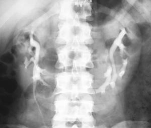
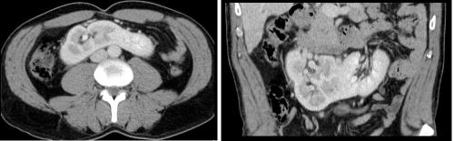

You are here: Urology Textbook > Kidneys > Horseshoe kidney
Horseshoe Kidney
Review literature: (Kölln et al, 1972) (Stein and Desai, 2007)
Definition of a Horseshoe Kidney
A horseshoe kidney is the fusion of the lower poles of both kidneys ventral of the aorta, the fusion is called isthmus of the horseshoe kidney and consists of connective tissue or renal parenchyma [fig. urography of a horseshoe kidney and computed tomography of a horseshoe kidney].
|  |
Urography of a horseshoe kidney: With kind permission of Dr. G. Antes, Kempten. |
|  |
Epidemiology of a Horseshoe Kidney
Incidence 1:700. Male:female = 2:1.
Etiology of a Horseshoe Kidney
The fusion of the lower poles takes place before the rotation and the ascension of the kidneys, thus the renal pelvis is positioned ventrally and calyceal system is positioned posteriorly. The inferior mesenteric artery inhibits the ascension of the kidney. The vascular supply of the horseshoe kidney derives from the iliac vessels and the distal aorta. Due to the abnormal vasculature, horseshoe kidneys may develop an extrinsic ureteropelvic obstruction with hydronephrosis.
Signs and Symptoms of a Horseshoe Kidney
60% of patients with a horseshoe kidney do not develop any symptoms. Otherwise, hydronephrosis, nephrolithiasis and infections are the most often complaints.
Malformations:
A horseshoe kidney is associated with other malformations (neural tube defect, heart defects and musculoskeletal system). 5–10% of patients with horseshoe kidneys have additional urogenital anomalies. A horseshoe kidney is associated with Turner's syndrome and trisomy 18.
Oncogenic risk:
The risk for Wilms tumor is doubled. The very rare renal carcinoid is also more common in horseshoe kidneys.
Treatment of a Horseshoe Kidney
Nephrolithiasis:
All techniques of stone therapy can be used: extracorporeal shock wave lithotripsy (ESWL), ureteroscopy or percutaneous nephrolithotomy.
Hydronephrosis:
Depending on the renal function, pyeloplasty or heminephrectomy is the treatment of choice.
Tumors of the horseshoe kidney:
Treatment depends on tumor size, age of the patients and suspected histology. Important for the surgical treatment is the pathological vascular supply of the horseshoe kidney.
| Kidney diseases | Index | Kidney malrotations |
Index: 1–9 A B C D E F G H I J K L M N O P Q R S T U V W X Y Z
References
- Kölln, C. P.; Boatman, D. L.; Schmidt, J. D. & Flocks, R. H.
- Horseshoe kidney: a review of 105 patients.
J Urol, 1972, 107, 203-204. - Stein, R. J. & Desai, M. M.
- Management of urolithiasis in the congenitally abnormal kidney (horseshoe and ectopic).
Curr Opin Urol, 2007, 17, 125-131.
 Deutsche Version: Hufeisenniere
Deutsche Version: Hufeisenniere